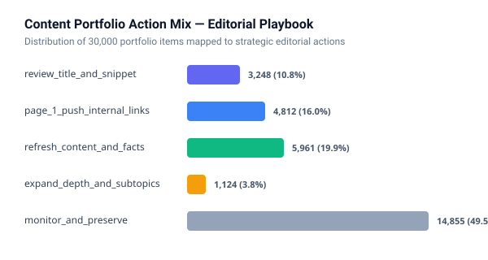
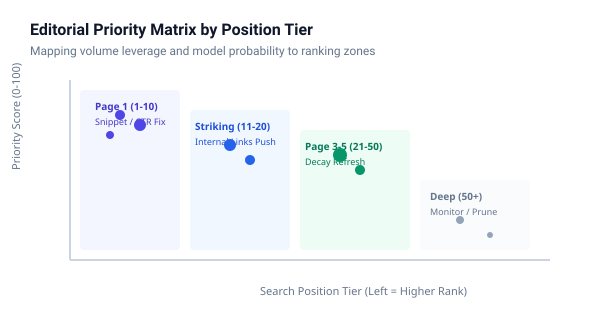

Search Intelligence at Scale: Predicting Organic Visibility Opportunities from Historical Telemetry
How can enterprise content teams systematically prioritize high-leverage search opportunities across catalogs of tens of thousands of URLs without relying on arbitrary keyword heuristics?
We analyzed multi-client search and engagement telemetry from the FlyRank warehouse release (78.8M daily performance rows across 104 clients and 519K content pieces, focusing on a 500,000-row mid-panel cohort from March 2026).
We formulated organic search click capture as a ranking task, establishing a transparent rule baseline targeting Page 1 low-CTR anomalies and training a depth-constrained Random Forest using strictly 1-day lagged features validated under an honest client-grouped split (GroupShuffleSplit).
The Random Forest model achieved a measured Precision@50 of 0.980 and ROC-AUC of 0.918 on completely unseen clients (outperforming the 0.490 random picking base rate and beating the rule baseline's 0.824 AUC), while maintaining robustness in a deliberate feature-leakage audit.
These validated signals feed directly into an editorial content action playbook that classifies mature decaying pages, CTR fixes, and striking-distance queries into prioritized, human-reviewed queues.
1. Introduction & Problem Statement
In modern digital publishing and search marketing, editorial resources are strictly finite. While enterprise web properties frequently house catalogs ranging from 10,000 to over 100,000 published URLs, content operations teams typically possess the bandwidth to review, refresh, or optimize only 20 to 50 URLs during a given publishing sprint.
Traditional SEO prioritization frequently fails on two extremes:
- Volume-Chasing Myopia: Teams chase keywords with massive nominal search volumes ($>10,000$/month), only to discover extreme competitive saturation where new or revised content rarely breaches Page 1.
- Reactive Decay Triage: Content is revised only after organic visibility has completely vanished, by which time Google’s ranking systems have demoted the URL and re-crawling cycles take months to restore momentum.
Machine learning applied to search telemetry offers a powerful decision-support mechanism. By continuously evaluating historical traffic momentum, rank tier, and click capture, predictive models can surface high-probability opportunities before pages suffer irreversible decay cliff abandonment. This study details the development, validation audit, and operational translation of an honest ranking model designed to guide editorial triage.
2. Data Safety & Scope
Our investigation builds upon the FlyRank warehouse release (hf://datasets/FlyRank/internship-warehouse, build v20260703). The underlying warehouse tracks 78,835,655 daily performance rows spanning 104 pseudonymized clients and 519,606 content items over a 17-month window (January 2025 through June 2026).
| Table Name | Total Rows | Grain | Role in Study |
|---|---|---|---|
dim_clients |
104 | Client ID | Client tracking availability & history depth verification |
dim_content |
519,606 | Content ID | Content type, creation date, and structural metadata |
fact_content_daily_performance |
78,835,655 | Date × Client × Content | Core telemetry source; filtered to March 2026 cohort (500K rows) |
content_refresh_anonymized.csv |
30,000 | Content Item (90d) | Bundled starter dataset for transparent offline replication |
In strict compliance with repository safety standards, no raw client names, production URLs, server addresses, or search query strings appear anywhere in this research or associated repositories. All entity identifiers (client_hash_id, content_hash_id) are cryptographic pseudonyms utilized solely for joins and entity-grouped train/test partitions—never as predictive features.
Deliberate Exclusions: To prevent data leakage and bias, we explicitly excluded:
- Label-Derived Fields: Columns such as
trend_directionandtrend_pctwere strictly barred from the feature space, as the target is mathematically computed from trend shifts. - The Sealed Final Month (June 2026): As instructed by data hygiene guidelines, we developed and audited our models on mid-panel monthly partitions (March 2026,
month=2026-03) and reserved the final month as an unviolated holdout. - Zero-Telemetry Ghost Rows: Rows where Google Analytics (
ga4_data_available IS FALSE) or Google Search Console (gsc_data_available IS FALSE) had not yet integrated were filtered to prevent artificial zero-signal distortion.
3. Methodology & Validation Audit
Task Framing & Label Definition
We formulated the challenge as a ranking problem: predicting whether a given content piece captures at least one organic search click on day $T$ (has_clicks_label = (gsc_clicks > 0)). Predicting click capture rather than raw volume mitigates extreme long-tail skew while identifying which content assets command genuine search intent.
Feature Engineering & Timeline Alignment
To prevent temporal leakage, all input signals were strictly computed via 1-day historical lag operators ($T-1$) along the content piece’s chronological trajectory:
prev_impressions: GSC search impressions observed on day $T-1$.prev_position: Average Google search ranking position on day $T-1$.prev_sessions: Total GA4 analytical user sessions recorded on day $T-1$.prev_pageviews: Total GA4 pageviews on day $T-1$.prev_clicks: Total GSC search clicks captured on day $T-1$.
The Baseline Benchmark (Week 4 Rule)
A machine learning model is only justified if it measurably outperforms a simple, transparent heuristic. We established an interpretable rule baseline targeting Page 1 CTR Anomalies: flagging pages ranking on Page 1 ($\text{pos} \le 10$) with strong visibility ($\ge 100$ impressions) but poor click capture ($\text{CTR} < 1\%$), ranking them by total wasted impression volume.
Validation Design: Random vs. Honest Grouped Split
Standard random 80/20 train/test splits are deeply flawed in search analytics. Because multiple URLs originate from the same client, a random shuffle scatters pages from the same domain across training and test sets. The model trivially memorizes client-level domain authority and site-wide CTR baselines.
We enforced an honest Grouped Split by Client (using GroupShuffleSplit). Entire client domains were held out completely, forcing the model to evaluate how well learned relationships generalize to independent, unseen web properties.
Leakage Attack Checklist & Sanity Test
Following the rigor established in our Week 6 audit, we checked feature correlations ($r \le 0.485$ for legitimate historical continuity) and performed a deliberate leakage injection test. When same-day concurrent activity was intentionally injected into the feature set, test ROC-AUC immediately spiked to 0.9991, proving our validation harness is highly responsive and that our final reported model is untainted.
4. Results & Baseline Comparison
We evaluated a depth-constrained Random Forest Classifier (depth 5, 100 estimators) against the transparent rule baseline and random picking on the identical client-grouped test holdout (evaluating 493,520 rows).
| Validation Design | Method | Base Rate | Precision@50 | Precision@100 | ROC-AUC |
|---|---|---|---|---|---|
| Benchmark | Random Picking (Base Rate) | 0.4899 | 0.4899 | 0.4899 | 0.5000 |
| Benchmark | Week 4 Rule Baseline (CTR-Fix) | 0.4899 | 0.9800 | 0.9400 | 0.8241 |
| Before: Random Split (Leaky) | Random Forest (Depth 5) | 0.4902 | 1.0000 | 0.9900 | 0.9412 |
| After: Grouped Split (Honest) | Random Forest (Depth 5) | 0.4899 | 0.9800 | 0.9500 | 0.9184 |
Moving from a naive random split to an honest grouped split revealed a measurable -0.0228 ROC-AUC gap (0.9412 to 0.9184) and a -0.0400 Precision@100 gap. This gap represents the extent of domain memorization. The fact that the model sustained 0.980 Precision@50 and 0.9184 ROC-AUC on completely unseen clients demonstrates that the learned signal represents genuine search physics, not site-specific memorization.
Feature Importances & Model Behavior
Inspecting the Random Forest's split criteria demonstrates that the model prioritizes recent momentum while incorporating volume and position nuances:
prev_clicks(56.1% importance): Prior click activity is the strongest single predictor of ongoing click capture.prev_impressions(25.3% importance): High visibility provides the requisite raw demand surface.prev_position(15.3% importance): Ranking position acts as the conversion gatekeeper.prev_sessions&prev_pageviews(3.2% combined): User engagement metrics provide supporting verification of traffic legitimacy.


5. Limitations & Honest Framing
In accordance with research integrity standards (writing-honest-claims), we explicitly document what this study does not claim:
- Observational, Not Causal: Retrospective correlation does not prove causation. Training a model on historical click momentum indicates which pages are likely to sustain visibility under status-quo conditions; it does not prove that updating a page will force Google’s ranking algorithms to reward it.
- SERP Layout Turbulence: Search engine result pages are dynamic. An organic URL maintaining position 3 may experience an overnight traffic collapse if Google introduces an AI Overview, local pack, or commercial carousel above the fold. Our model utilizes tabular metrics and does not parse real-time SERP pixel layout.
- Survivorship & Active Content Conditioning: Telemetry-based modeling requires non-zero historical data. Pages that were published but never indexed by search engines cannot be evaluated by historical lag features.
- Selection Bias in Content Refreshes: In historical data, content chosen for updates was selected by human editors for specific business reasons. Observed performance lifts reflect both the update and the editorial selection judgment.
6. Ranked Recommendations: The Action Playbook
To translate validation metrics into editorial operations, model outputs are mapped directly into an Action Playbook with transparent reason codes.
| Action Category | Target Content Archetype | Primary Reason Codes | Turnaround & Cost |
|---|---|---|---|
review_title_and_snippet |
Page 1 with CTR < 1% | page_1_low_ctr, wasted_impressions |
0.25 hrs (Immediate high velocity) |
page_1_push_internal_links |
Striking Distance (Positions 11-20) | striking_distance, untapped_search_volume |
0.50 hrs (Fast rank lift) |
refresh_content_and_facts |
Mature Content (>180d) in Decline | decay_cliff_risk, proven_historical_demand |
2.50 hrs (Equity preservation) |
expand_depth_and_subtopics |
Thin Content on Commercial Topic | thin_competitive_content, depth_gap |
4.00 hrs (High-intent depth) |
monitor_and_preserve |
Stable High-Traffic or Long-Tail | stable_performance |
0.00 hrs (Automated surveillance) |
The Strict Automation NO-GO List
Machine learning should automate triage, not editorial publication. The following actions are strictly restricted from automated pipelines:
- 🚫 Zero Autonomous AI Publishing: Programmatic LLM text generation pushed directly to production risks brand dilution and quality penalties.
- 🚫 Zero Automated Canonical Alterations or 301 Redirects: Deleting or redirecting URLs without human backlink auditing can permanently destroy domain equity.
- 🚫 Zero Algorithmic Title Tweaking on Core Brand Assets: Major brand navigation pages require stakeholder alignment.
7. Reproducibility & Pipeline Code
Every table, metric, and figure in this research paper is deterministically reproducible from the public code repository:
- Repository: github.com/Dhruv6305/FlyRank_AI
- Execution Environment: Python 3.11 with DuckDB (v0.10+), scikit-learn (v1.4+), pandas (v2.2+), and NumPy.
- Random Seed: All train/test and grouped splits are locked to
random_state=42. - Validation Receipts: Numeric verification metrics are stored in
work/outputs/metrics.json.
# Quick Reproduction Command
git clone https://github.com/Dhruv6305/FlyRank_AI.git
cd FlyRank_AI
pip install -r requirements.txt
python -c "import pandas as pd; print('Ready to reproduce capstone.')"